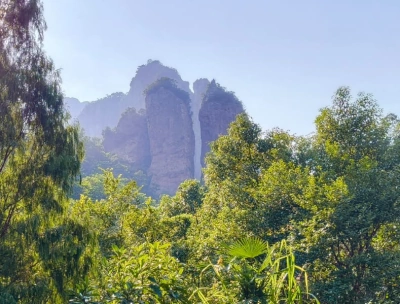
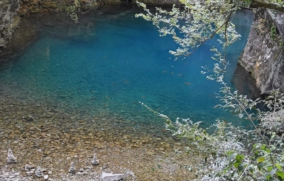
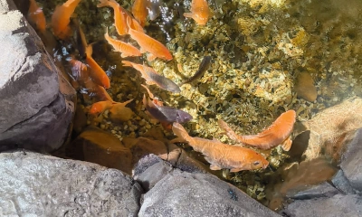
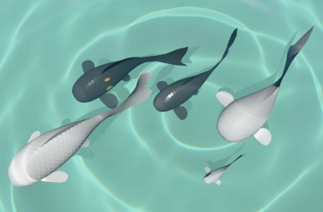

The ancestors of koi carp come from China, and they were already domesticated eight thousand years ago, albeit not for their looks. They're not famous for their great taste either, but they eat everything and grow large on their own when roaming rice paddies. Some simple colored variants did emerge in China before koi were introduced to Japan, but complex patterns didn't emerge yet.
Eventually these Chinese carp reached Japan via Korea, and the ornamental koi of today were perfected in Ojiya, from which they are imported back into China again today.

This month, I visited China, so of course I had to search for koi in the mountains of Zhejiang. I found some in the wild while hiking, which is certainly fishy because these fish can't possibly get all the way up there unless someone released them. The mountain streams had a very deep turquoise color, quite different from the North American or European streams I'm more familiar with. Many koi ponds can be found in parks and cultivated areas, and near an aquarium, I've seen the strangest thing: kids were feeding koi in a pond with baby bottles on the end of sticks, there must have been something tasty in there.

Because I traveled with my Snapdragon laptop, I had a great excuse to spend some time on the ARM chip port. This laptop has a mobile-like ARM chip, but it's also quite similar to the Nintendo Switch and many Android devices. I was able to fix most bugs and get the game to run well. The engine had to be modified to support smaller memory allocations, because some devices don't let you allocate a gigabyte of RAM for example, which was limiting the number of fish in the scene. The allocations had to be split up and stitched together by the engine. Because the integrated GPU is very weak, I've also implemented some optimizations to prevent lag spikes whenever a new koi or plant is generated. My GPU unfortunately doesn't support async compute, which means that I can't do heavy compute work while frames are rendering, the entire game freezes until the work is done. This issue can be mitigated by spreading work out over multiple frames, although few devices have this limitation nowadays. Finally, some things were broken through no fault of my own. I won't go into the details, but several Vulkan features are just not implemented properly for Adreno GPU drivers, so developers must simply avoid using these features. The hard part is figuring out what's a bug, and what's broken on the GPU vendors side. It would have been great if they just told us what they didn't bother to implement, but alas.

The scales I worked on last month are now no longer just shapes, they can also receive and reflect light properly. This was a much deeper rabbit hole than I anticipated as always; scales are pretty rigid, it's not a picture that's stretched over the fish body, they should render as if they are little overlapping 3D models. Each scale has its own rotation, based on where it is attached to the skin. This all needs to be pre-calculated every frame, so the koi shader can use this data to apply lighting. I've also improved the algorithm. Scales can now:
The shading in the image is currently very light, the scale pattern is subtle, but more interesting pattern interactions and scale materials can be added to the scale renderer to make them very beautiful in the future.